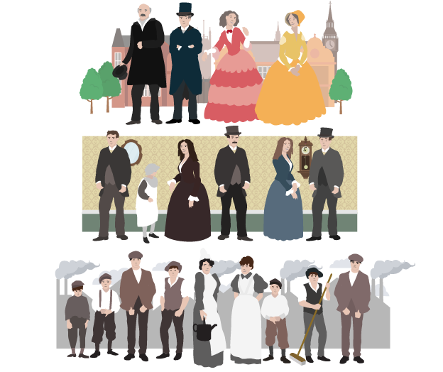
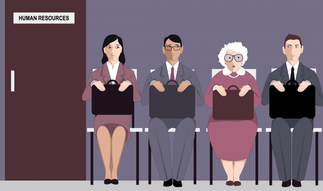
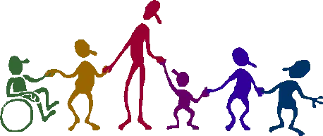

|
People born to a certain ethnicity and race, social background, and gender are readily assigned an ascribed status that are beyond their control. These factors have fundamental effects on people’s lives and may limit their ability to achieve their desired educational, occupational, and financial goals. A person’s success in achieving the desired educational goals is essential to occupational and financial success and therefore is very much related to understanding inequalities of income and wealth. In addition to these are the factors of age and physical and mental ability which even if we insist that they do not cause social inequality, a closer examination will say otherwise. |
Canadian society has a very rich ethnic and cultural diversity. It is said to be one of the country’s strong features which is why it attracts migrants from all over the world. Statistics Canada (2017) reported that in 2016, the Canadian population had over 250 ethnic origins, where four in ten people belonged to more than one origin.
To show the growing ethnic disparities in Canada, a set of fact sheets was released by the organization called Colour of Poverty - Color of Change (COP-COC).
It was released on March 21, 2019, and the information is based on the 2016 Canadian census. The highlights show persistent disparities experienced by indigenous communities and communities of color.
To show the growing ethnic disparities in Canada, a set of fact sheets was released by the organization called Colour of Poverty - Color of Change (COP-COC). It was released on March 21, 2019, and the information is based on the 2016 Canadian census. The highlights showing persistent disparities experienced by indigenous communities and communities of color include:
The highlights showing persistent disparities experienced by indigenous communities and communities of color include:
The 2016 Census showed that:

The upper-class population is generally more educated just like their parents. At the other end of the spectrum, it is generally observed that the working class, both men and women have lower levels of post-secondary education than their counterparts in the middle class. This occurs for two main reasons.
1) The lower income class has more financial difficulty in pursuing post-secondary education.
2) Education and studying are not a major part of their life and culture, and this is often true for the generations before them.
If you think there is gender equality in Canada, think again!
Men and women are not the same but it does not mean that they should not be given equal rights and opportunities because of their gender.
There are many facets of life where gender inequality is apparent.
The first one that comes to mind is the gender pay gap. Statistics Canada reported that in 2018, female employees aged 25 to 54 earned $0.87 for every dollar earned by men. It means that they earn 13.3% less than their male counterparts.
Another issue is gender-based violence where women continue to suffer sexual abuse/assault from their partners or from the person they know.
Most recently added to this type of abuse is cyber violence which is done through online behaviour.
Women also face some types of barriers (e.g., lack of education, being tasked with child-rearing, and other domestic responsibilities) which makes it hard to engage in meaningful livelihood activities and get out of poverty.
There remains an imbalance in political and professional roles when these are traditionally entrusted to men. This kind of inequality is related to the concept of the glass ceiling effect which is seen as the invisible but real barrier through which the next stage or level of advancement can be seen but cannot be reached by a section of qualified and deserving employees.
As reported by Statistics Canada, the senior population aged 65 and over comprised 17.2% in 2018. This aging population is fuelled by the advancing age of the baby boomers (born between 1946 and 1965) combined with the 2016 fertility rate of 1.54 births per woman which is below the replacement level of 2.1 births per woman, and the increase in life expectancy for both men and women.

It is estimated that the senior population will reach 20% in 2024 and will further increase to 25% in 2055, while the 0-14 age group will remain stable at 15% to 16% within the same period.
This means that the working-age group will continue to shrink while assuming increasing responsibilities for the young and the seniors.
A growing number of seniors continue to live under very difficult circumstances because they are no longer gainfully employed, and they tend to spend their savings, if not depend on government welfare.
To cope with this trend, the government has to come up with responsive and relevant policies, programs, and services to serve the needs of the growing number of seniors. This situation gives the Canadian government increased pressure to improve the financial situation of those entering retirement.
The physical and mental disability of individuals traditionally makes it hard for them to participate in mainstream economic activities. According to Statistics Canada, in 2017, 22% of Canadians had at least one disability. This represents 6.2 million individuals. There are also 24% of women as against 20% of men with at least one disability.
Laws protecting the rights of people with disabilities are entrenched in the country’s strong legislative framework. Two federal laws guarantee their equal protection and full participation in society.
Read this article for further information.

Today, people with mental or physical disabilities are entitled to equal access to housing, employment, health needs, and public accommodations. Many of them find themselves participating actively and fully in work and social activities.
True or False
True or False
True or False
True or False
True or False